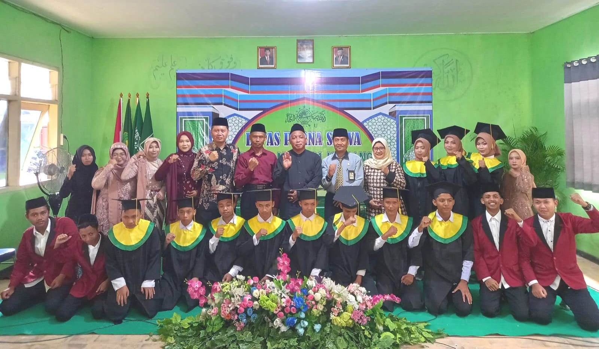
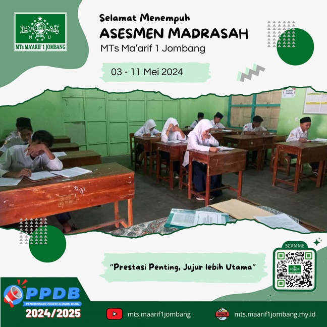
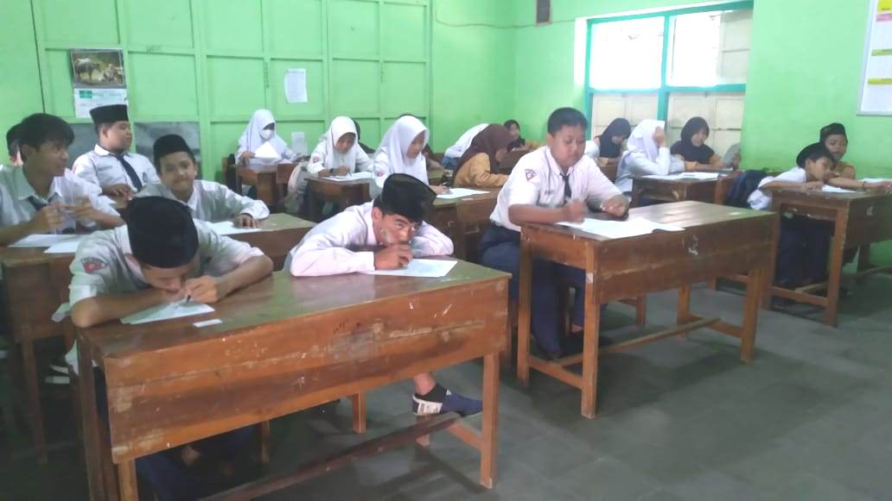
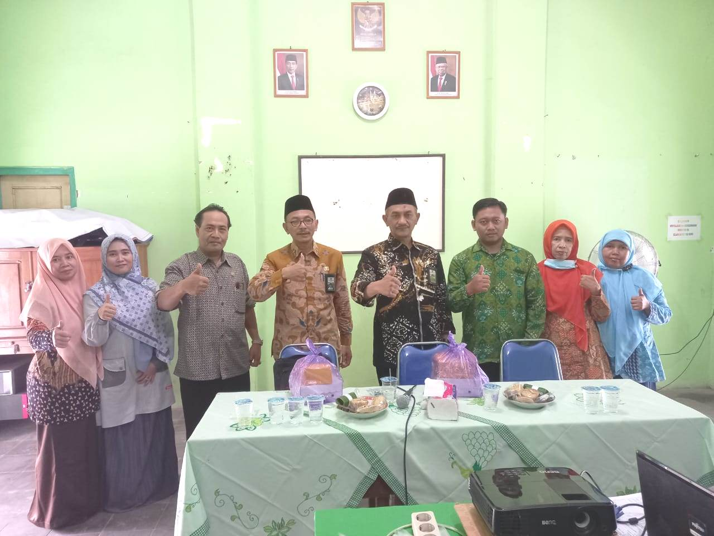

LEPAS PURNA SISWA MTs-MA MA'ARIF 1 JOMBANG TP 2023/2024
Pada Sabtu (18/05/2024) MTs-MA Ma'arif 1 Jombang mengadakan Wisuda Lepas Purna Siswa yang dilaksanakan di Aula MA Ma'arif 1 Jombang. Kegiatan yang menghadirkan seluruh orang tua/wali siswa kelas 9 dan 12 tersebut juga dihadiri oleh Ketua PC NU Jombang, Ketua dan Sekretaris LP Ma'arif NU Jombang, Ketua BP3MNU MTs-MA Ma'arif 1 Jombang, Imaroh Masjid Riyadlul Jannah serta tokoh-tokoh masyarakat sekitar.
Kegiatan diawali dengan pembacaan ayat-ayat suci Al-Qur'an oleh siswa MTs Ma'arif 1 Jombang, kemudian dilanjutkan dengan sambutan dari Ketua BP3MNU, Kepala Madrasah, Perwakilan Wali Siswa dan terakhir oleh Ketua PC NU Jombang Bapak Drs. KH. Fahmi Amrulloh Hadziq.
Acara Wisuda Lepas Purna Siswa MTs-MA Ma'arif 1 Jombang menjadi momen yang penuh haru bagi para wisudawan, orangtua dan keluarga mereka.
PELAKSANAAN ASESMEN MADRASAH TP 2023/2024
Asesmen Madrasah adalah asesmen sumatif yang diselenggarakan pada akhir jenjang pendidikan madrasah untuk mengukur pencapaian hasil belajar peserta didik sesuai Standar Kompetensi Lulusan yang telah ditetapkan.
Pelaksaan Asesmen Madrasah (AM) ini dilaksanakan selama dua periode, yaitu: Asesmen Madrasah tanggal 3 - 11 Mei 2024 dan Ujian Praktik tanggal 13 - 15 Mei 2024.
Dilihat dari dua hari pelaksanaan (Senin, 6 Mei 2024), capaian peserta didik dalam aspek literasi dan numerasi menunjukkan peningkatan dibandingkan tahun sebelumnya. Hal ini menunjukkan efektivitas pembelajaran yang telah dilaksanakan sebelumnya.
Ketua Pelaksana Bapak Irwan Kusnawi, S.Pd.I mengatakan, "Kami berharap hasil AM ini dapat menjadi motivasi bagi seluruh peserta didik untuk terus belajar dan meningkatkan prestasinya".
UJIAN UAMNU DAN PTS GENAP TP 2023/2024
Rabu, 24 April 2024 MTS Ma'arif 1 Jombang menggelar Ujian UAMNU dan PTS Genap di hari ketiga pelaksanaan. Setiap kelas menjalani ujian dengan pengawasan guru yang sudah terjadwal sebelumnya.
Seluruh siswa MTS Ma'arif 1 Jombang turut serta dalam ujian ini dengan tujuan untuk melatih dan mengasah ingatan mereka terhadap materi yang telah dipelajari selama semester ini.
Ketua Panitia, Ibu Sofiatun, S.Ag, menyampaikan harapannya atas pelaksanaan ujian hari ini, "Alhamdulillah, hari ini merupakan hari ketiga anak-anak melaksanakan Ujian UAMNU dan PTS Genap tahun 2024. Semoga selama ujian, mereka dapat menjawab soal dengan baik dan benar."
Diharapkan hasil dari ujian ini dapat menjadi evaluasi yang baik bagi perkembangan akademik siswa-siswi MTS Ma'arif 1 Jombang serta membantu mereka untuk terus meningkatkan prestasi belajar mereka.

PERINGATAN ISRA' MI'RAJ NABI MUHAMMAD SAW
Isra' Mi'raj merupakan salah satu peristiwa penting dalam sejarah Islam. Dalam peristiwa ini, Nabi Muhammad SAW mendapatkan perintah dari Allah SWT untuk melaksanakan sholat lima waktu. MTs Ma'arif 1 Jombang memperingati Isra' Mi'raj 1445H pada Rabu (07/02/2024) pagi di halaman madrasah. Seluruh keluarga besar madrasah hadir, mulai dari Kepala madrasah, Guru, Karyawan dan seluruh peserta didik.
Kegiatan Isra' Mi'raj ini berlangsung dengan hikmat. Begitu juga dengan adanya antusias dari siswa-siswi serta penampilan banjari dari siswa/siswi yang membuat acara peringatan Isra' Mi'raj menjadi meriah.

PENDAMPINGAN PERSIAPAN AKREDITASI 2024
Pengawas Madrasah MTs Ma'arif 1 Jombang, Bapak H. Agus Pramukantoro, M.Pd.I memberikan pendampingan tentang persiapan akreditasi tahun 2024, Jum'at (26/01/2024) di ruang Lab komputer.
Dalam arahannya beliau menekankan, pentingnya pengelola madrasah untuk mempersiapkan seluruh dokumentasi yang mencakup empat komponen yaitu komponen Mutu Lulusan, komponen Proses Pembelajaran, Komponen Mutu Guru dan Komponen Manajemen Sekolah yang akan digunakan tim asesor sebagai acuan dalam penilaian akreditasi nantinya.
"Akreditasi sekolah/madrasah diselenggarakan oleh Badan Akreditasi Nasional Sekolah/Madrasah (BAN S/M). Akreditasi tahun ini berbeda dengan akreditasi tahun tahun sebelumnya. Pada tahun ini akreditasi menggunakan instrumen baru yang disebut IASP 2020", tutur Pengawas Pembina MTs Ma'arif 1 Jombang saat memberikan pendampingan.
PELAKSANAAN UJIAN PAS TP 2023/2024
Madrasah Tsanawiyah Ma'arif 1 Jombang, melaksanakan Penilaian Akhir Semester (PAS) Tahun Pelajaran 2023/2024 dalam hal ini merupakan salah satu bentuk evaluasi yang dilakukan oleh seluruh tenaga pendidik di MTs Ma'arif 1 Jombang guna untuk menguji kemampuan peserta didik sampai dimana titik pemahaman dalam belajarnya selama 6 bulan sebelumnya.
Pelaksaan PAS ini akan dilaksanakan selama 9 hari mulai dari tanggal 6 sampai 215 Desember 2023, dan tepat pada hari pertama ini pelaksaan PAS telah berjalan dengan lancar sesuai yang diharapkan oleh Kepala madrasah beserta Ketua Panitia dan anggotanya yang ada di MTs Ma'arif 1 Jombang, Kamis (06/12/2023).
Menurut ketua penitia, bahwa pelaksanaan Penilaian Akhir Semester hari ini Alhamdulillah berjalan baik dan lancar, dengan mata pelajaran yang diujikan yakni Bahasa Arab pada jam pertama dan Aqidah Akhlaq pada jam kedua. Lanjut ia menjelaskan bahwa Pelaksanaan PAS ini diikuti oleh seluruh peserta didik dimulai kelas 7 sampai kelas 9. Para peserta didik tampak serius mengerjakan soal ujian yang mereka jalani selama pembelajaran semester Ganjil di tingkatannya Masing masing.
PKKM TAHUN 2023 BERJALAN LANCAR
Penilaian Kinerja Kepala Madrasah (PKKM) merupakan suatu proses pengumpulan, pengolahan, analisis, dan interpretasi data tentang kualitas Kepala Madrasah dalam melaksanakan tugas pokoknya. MTs Ma'arif 1 Jombang melaksanakan Penilaian Kinerja Kepala Madrasah (PKKM), pada Selasa 05 Desember 2023.
Pelaksanaan PKKM ini dihadiri oleh Pengawas Madrasah Kementrian Agama Kabupaten Jombang Bapak H. Agus Pramukantoro, M.Pd.I dan Bapak Drs. Fatoni, M.Pd.I.
Kepala Madrasah dalam sambutannya menyampaikan terima kasih dan selamat datang pada Tim Pengawas Madrasah yang telah berkunjung di MTs Ma'arif 1 Jombang untuk melaksanakan kegiatan PKKM. “Selamat datang Bapak Pengawas Madrasah Kemenag Jombang yang telah berkunjung dimadrasah kami,” Kata Bapak H. Ali Toib.
Lebih lanjut ia mengatakan, ada beberapa aspek yang akan dilihat dalam PKKM ini diantaranya pengembangan madrasah, pelaksanaan tugas manajerial, pengembangan kewirausahaan dan supervisi kepada guru dan tenaga kependidikan.
Pelaksanaan PKKM berlangsung lancar, tertib dan tidak ada kendala. Kepala Madrasah mengaku lega, karena mampu melewati semua tahapan kegiatan dengan lancar. Tak lupa juga ia mengucapkan terima kasih kepada pendidik dan tenaga kependidikan yang telah bekerjasama dalam mempersiapkan penilaian tersebut.
KEGIATAN RUTIN SETIAP JUM'AT LEGI
Kegiatan pembiasaan keagamaan yang dilaksanakan untuk menumbuhkan karakter religius siswa di madrasah setiap hari jum’at khususnya hari Jum'at Legi adalah dengan membaca sholawat, yasinan, tahlilan dan istighotsah.
Selain membentuk religious, juga untuk menjaga amaliyah ahlusunnah wal jama’ah serta menumbuhkan nilai sosial masyarakat dan membentuk kemandirian dan keberanian mental.

SOSIALISASI PKKM OLEH PENGAWAS
Penilaian Kinerja Kepala Madrasah (PKKM) merupakan agenda tahunan MTs Ma'arif 1 Jombang. Agenda tersebut merupakan bentuk pertanggungjawaban Kepala Madrasah terhadap Sie Pendidikan Madrasah (Pendma) yang dinaungi oleh kemenag kabupaten Jombang.
Untuk menyukseskan PKKM tersebut, kepala madrasah bersama jajaran guru dan staf karyawan berinisiatif untuk mengundang pengawas madrasah Bapak H. Agus Pramukantoro, M.Pd.I dan Bapak Drs. Fatoni, M.Pd.I. Beliau memberikan gambaran umum apa-apa saja yang harus disiapkan untuk menghadapi PKKM tersebut. Acara tersebut dimulai pukul 09.30 hingga pukul 11.30.
Sosialisasi PKKM merupakan bentuk ikhtiar kepala madrasah beserta jajaran pendidik dan staf karyawan MTs Ma'arif 1 Jombang untuk dapat mencapai nilai yang diharapkan. Semoga ikhtiar tersebut membuahkan hasil optimal. Aamiin.
JUARA KOMPETISI SAINS DAN MATEMATIKA

Lomba Kompetisi Sains dan Kompetisi Matematika Tingkat SMP/MTs Se-Kabupaten Jombang Tahun 2023.
SelengkapnyaJUARA 3 LOMBA VIDEO PENDEK

Lomba Video Pendek Lagu Mars Ma'arif NU dan Hafalan Nadhom Aqidatul Awam dalam rangka Hari Santri Tahun 2021.